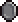
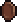

Lazy Bear Games - Agosto 2018
Graveyard Keeper é um simulador de gerenciamento de cemitério medieval mais impreciso de todos os tempos. Construa e gerencie o seu próprio cemitério e expanda para outros empreendimentos enquanto encontra atalhos para cortar custos. Use todos os recursos que encontrar. Afinal, este é um jogo sobre o espírito do capitalismo e sobre como fazer o que for preciso para construir um negócio próspero. E também é uma história de amor.
Manuel é o NPC estalajadeiro no Cavalo Morto e marido da D. Flor. Ele é obrigado pelo contrato antigo a comprar seus Certificado de sepultamento pelo valor constante de 1 50
O Burro é um animal de trabalho que fala e deixa um cadáver em frente ao necrotério a cada alguns dias. Ele tem uma carroça que carrega o cadáver, a qual está conectada a ele.
Gerry é uma caveira falante que você encontrou enterrada atrás de sua casa. Ele o guia nos primeiros dias como guardião do cemitério. Após o tutorial do cemitério, ele fica no necrotério e pede álcool.
Construa e administre sua própria taverna. Finalmente você terá seu próprio bar! Organize eventos de corrida de ratos e stand-up. Conheça melhor os aldeões completando dezenas de novas missões. Ajude Gerry a fazer o recall total. Testemunhe os acontecimentos de 200 anos atrás que revelarão a história do mundo do jogo e o seu papel nele.
Faça o acampamento se tornar um assentamento fortificado enquanto cuida dos interesses deles, proteja — da espada e do fogo — aqueles que confiaram suas vidas a você e, por fim, desvende os mistérios do jogo cruel, que causou a Grande Explosão e o retorno da Maldição Antiga.
Ninguém está livre do pecado, é o que ensina corretamente o Bispo da Cidade. Mas quem disse que não se pode purgar esses pecados? Ajude seu novo amigo Euric a realizar o sonho dele e remova os fragmentos de pecado de sua alma. Em troca, ele está disposto a compartilhar um livro que descreve uma nova tecnologia de controle global das criações produzidas nas estações de trabalho dos zumbis... O que você se dispõe a fazer para obtê-lo?